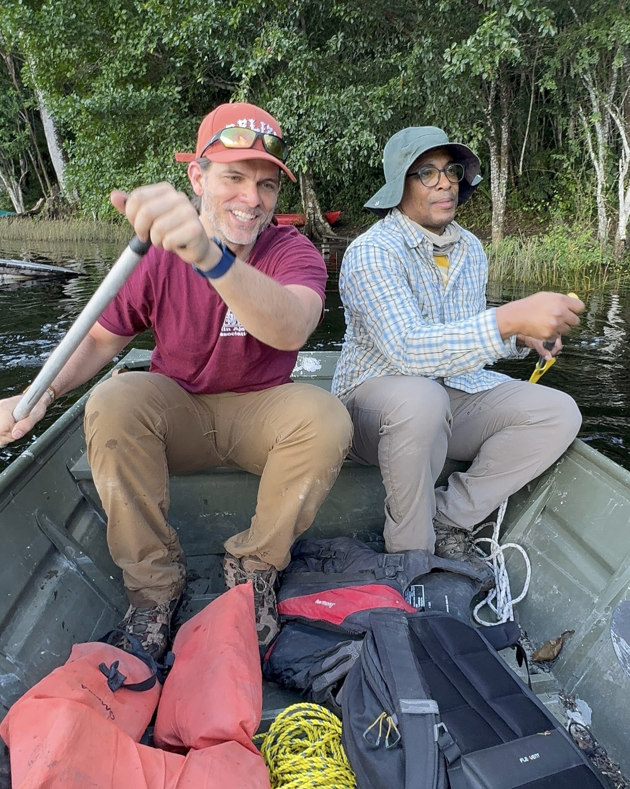
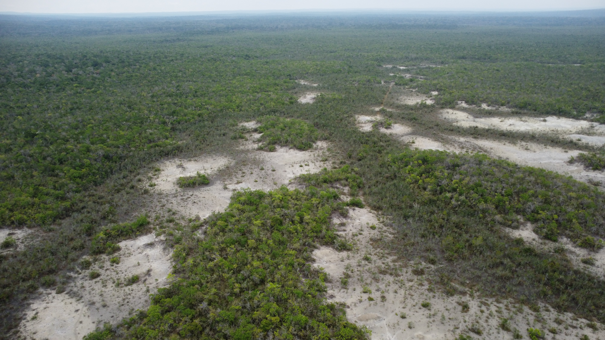
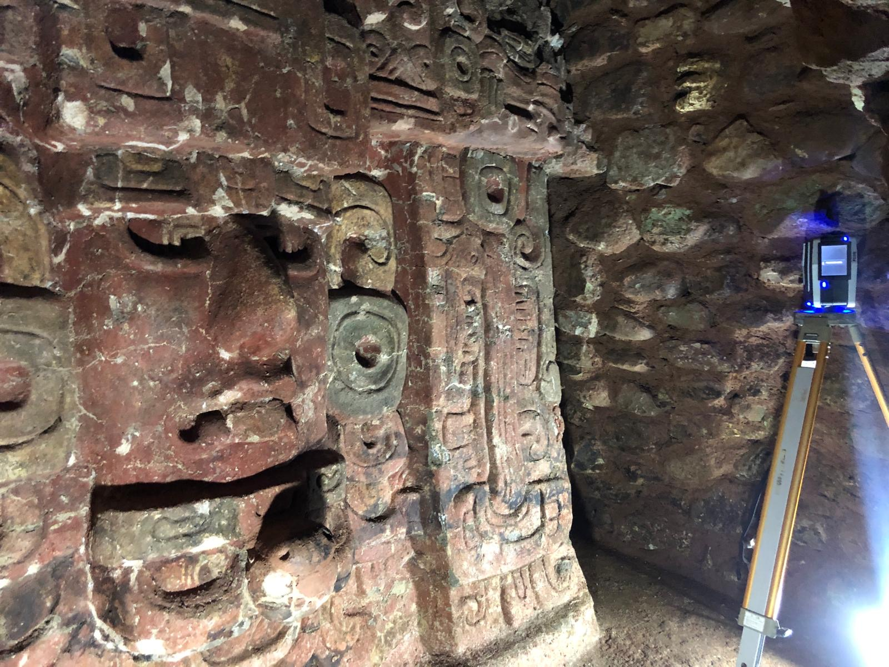
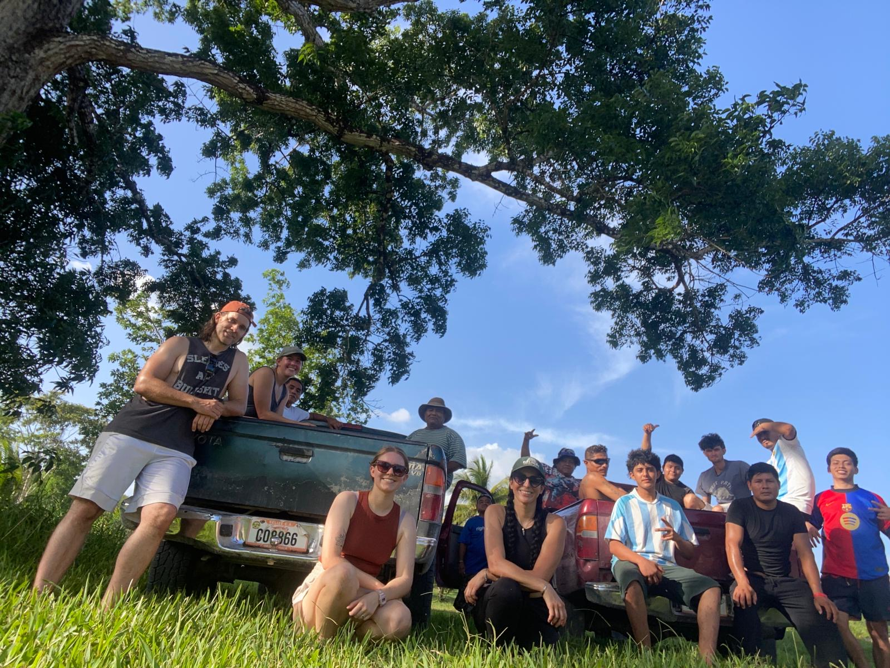

Fieldwork
My fieldwork combines archaeology, geography, environmental science, mapping, excavation, coring, lidar, and community archaeology.
Belize
Research in Belize includes work at Laguna Seca, Laguna Verde and Wamil in Northwestern Belize, Uxbenká/Uchben’ kaj, Lubaantun, Ek Xux, Muklebal Tzul, and Ix Kuku’il in southern Belize. Work has included excavation, pedestrian survey, lidar analysis, coring, wetland soils, mapping, 3D modeling, and paleoenvironmental sampling.

Guatemala
Recent work in Guatemala includes preliminary bathymetric mapping at Dos Lagunas, soils analysis of the "el desierto" gypsum desert near Río Azul, and terrestrial lidar mapping at Río Azul, contributing to broader research on landscape history, environmental change, and archaeological documentation.

Honduras
At Copan, I have worked primarily with terestrial lidar to map and conduct tunnel survey, 3D modeling of tunnels and ancient Maya architectur, and other forms of digital documentation in collaboration with the Early Copan Acropolis Program.

Community Engagement
My fieldwork is grounded in strong relationships with local stakeholders, Indigenous Maya communities, conservation partners, and government institutions. In southern Belize, this includes community engagement in Santa Cruz, San Antonio, and San Pedro Columbia, as well as work connected to Ya’axché Conservation Trust and the Uchben’ kaj Kin Ajaw Association.
